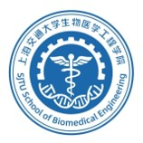

柳宇轩 (Yuxuan Liu)
 |
博士研究生,共青团员 |
关于我
我现在是一名就读于上海交通大学生物医学工程学院&医疗机器人研究院的博士生(2022级)。在此之前, 我于2022年6月在上海交通大学生物医学工程学院获得了生物医学工程专业的工学学士学位和数学与应用数学的辅修学位, 本科连续三学年专业排名专业第一(1/72)。
研究兴趣: 计算机视觉，深度学习，生物医学信号/图像处理，人体行为认知分析，手术机器人。
教育经历
|
|
博士 上海交通大学医疗机器人研究院 (2022.9 ~ 2027.6)
|
|  | 本科 上海交通生物医学工程学院 (2018.9 ~ 2022.6)
|
![[成绩单]](picture/score_whole.jpeg){kind=link}
高中 山东省德州市第一中学 (2015.9 ~ 2018.6)
|
学术论文
Ego+X: An Egocentric Vision System for Global 3D Human Pose Estimation and Social Interaction Characterization
Yuxuan Liu, Jianxin Yang, Xiao Gu, Yao Guo and Guang-Zhong Yang
IEEE/RSJ International Conference on Intelligent Robots and Systems (IROS), 2022. [PDF][Github]
EgoHMR: Egocentric Human Mesh Recovery via Hierarchical Latent Diffusion Model
Yuxuan Liu, Jianxin Yang, Xiao Gu, Yao Guo and Guang-Zhong Yang
IEEE International Conference on Robotics and Automation (ICRA), 2023.[PDF]
EgoFish3D: Egocentric 3D Pose Estimation from a Fisheye Camera via Self-Supervised Learning
Yuxuan Liu, Jianxin Yang, Xiao Gu, Yijun Chen, Yao Guo and Guang-Zhong Yang
IEEE Transactions on Multimedia (TMM), 2023.[PDF][Github]
PoseSDF: Simultaneous 3D Human Shape Reconstruction and Gait Pose Estimation Using Signed Distance Functions
Jianxin Yang, Yuxuan Liu, Xiao Gu, Guang-Zhong Yang and Yao Guo
IEEE International Conference on Robotics and Automation (ICRA), 2022.[PDF]
Detection and Assessment of Parkinson's Disease based on Gait Analysis: A Survey
Yao Guo, Jianxin Yang, Yuxuan Liu, Xun Chen and Guang-Zhong Yang
Frontiers in Aging Neuroscience, 2022. [PDF]
Tackling Long-Tailed Category Distribution Under Domain Shifts
Xiao Gu, Yao Guo, Zeju Li, Jianing Qiu, Qi Dou, Yuxuan Liu, Benny Lo, and Guang-Zhong Yang
European Conference on Computer Vision (ECCV), 2022. [Project][Github]
EasyGaze3D: Towards Effective and Flexible 3D Gaze Estimation from a Single RGB Camera
Jinkai Li, Jianxin Yang, Yuxuan Liu, Zhen Li, Guang-Zhong Yang and Yao Guo
Submitted to IEEE/RSJ International Conference on Intelligent Robots and Systems (IROS), 2023.[PDF]